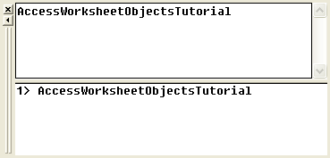
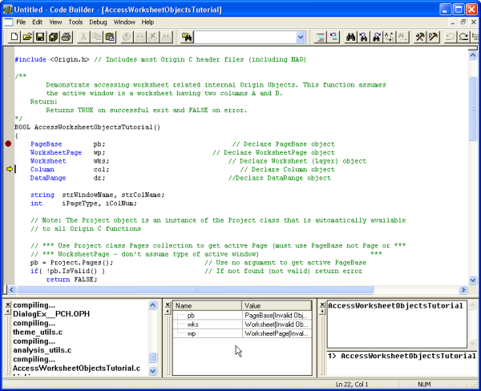

Mit Origin C auf interne Origin-Objekte zugreifen
Zusammenfassung
Auf interne Origin-Objekte (wie Projekt Explorer-Ordner, Origin-Fenster
(Seiten), Layer, Diagramme, Grafikobjekte, Datensätze etc.) wird mit Hilfe
von Origin C-Klassen zugegriffen. Um auf ein internes Origin-Objekt zuzugreifen
oder es programmatisch zu steuern, müssen Sie es an ein Origin C-Objekt
anhängen.
Um dieses an ein internes Origin-Objekt anzuhängen, müssen Sie es zunächst
finden mit Hilfe der Eigenschaften, Methoden und Sammlungen einer Container-Klasse.
Herkömmliche Container-Klassen umfassen Projekt, Ordner, Seite, Diagrammseite,
Layer, Diagrammlayer, Arbeitsblatt, Matrixlayer und Sammelklassen. Sobald
es gefunden wird, kann ein internes Origin-Objekt einfach an ein Origin
C-Objekt des entsprechenden Typs angehängt werden.
Das interne Origin-Objekt wird dann programmatisch gesteuert, indem
die Klassenmethoden und Eigenschaften des angehängten Origin C-Objekts
bearbeitet werden. In diesem Tutorial wird erläutert, wie bestimmte interne
Origin-Objekte gesucht und diese an Objekte angehängt werden. Außerdem
wird Ihnen gezeigt, wie Sie durch Bearbeiten der Methoden und Eigenschaften
der angehängten Origin C-Objekte auf diese Objekte zugreifen.
Origin-Version mind. erforderlich: 8.1 SR1
Was Sie lernen werden
Dieses Tutorial zeigt Ihnen, wie Sie:
- auf mit Arbeitsblättern verbundene Objekte zugreifen,
- auf mit Diagrammen verbundene Objekte zugreifen.
Zugriff auf mit Arbeitsblättern verbundenen
Objekten
Kenntnisse zu den Origin C-Projektklassen (Project.h), den Sammelklassen
(Collection.h) und den Ordnerklassen (Folder.h) sind bei dem Versuch zu
verstehen, wie bestimmte interne Origin-Objekte zu finden sind, sehr nützlich.
Möglicherweise ist es einigen Anwendern eine Hilfe, sich vorher über diese
Klassen in der Origin C-Referenz: Klassen der Origin C -Hilfe
oder in den oben stehenden Headerdateien, die sich im Unterordner ..\Origin\OriginC\system
befinden, zu informieren.
Um mit diesem Tutorial zu beginnen:
- Klicken Sie auf der Symbolleiste Standard auf die Schaltfläche
Neues Projekt
 .
.
- Klicken Sie auf der Symbolleiste Standard auf die Schaltfläche
Code Builder
 .
.
- Wählen Sie im Menü Code Builder die Option Datei: Neuer
Arbeitsbereich.
- Klicken Sie im Menü Code Builder auf die Schaltfläche Öffnen
.
- Navigieren Sie zu dem Ordner \Samples\Origin C Examples\Programming
Guide\Introduction to Accessing Origin Objects im Verzeichnis der Origin-Software,
wählen Sie AccessWorksheetObjectsTutorial.c, aktivieren Sie das Kontrollkästchen
Zu Arbeitsbereich hinzufügen und klicken Sie auf Öffnen.
- Klicken Sie auf der Symbolleiste Code Builder auf die Schaltfläche
Alle neu erstellen . Dadurch wird die Datei kompiliert und verknüpft.
- Prüfen Sie im Menü Code Builder unter Ansicht, dass die
Fenster der LabTalk-Konsole (Befehls- & Ergebnisfenster) und
der Lokalen Variablen angezeigt werden (das Menüelement ist jeweils
aktiviert).
- Wählen Sie im Menü Code Builder die Option Hilfsmittel:
Benutzerdefiniert. Wählen Sie die Registerkarte Symbolleisten und
stellen Sie sicher, dass das Kontrollkästchen für die Symbolleiste Debug
aktiviert ist.
- Aktivieren Sie im Code Builder AccessWorksheetObjectsTutorial.c.
- Klicken Sie oben auf die Zeile:
PageBase pb;
Sie können den Cursor an einer beliebigen Stelle auf der Zeile positionieren.
- Wählen Sie im Menü Code Builder die Option Debuggen:
Haltepunkt umschalten. Alternativ drücken Sie F9 oder klicken
Sie auf die Schaltfläche Haltepunkt umschalten auf der Symbolleiste Debug.
In dem grauen Rahmen wird links neben der obigen Linie ein brauner Kreis
angezeigt und zeigt an, dass für die Linie ein Haltepunkt für das Debuggen
festgelegt wurde.
- Aktivieren Sie im Arbeitsbereich des Code Builders die
LabTalk-Konsole (Befehls- & Ergebnisfenster) und geben Sie Folgendes
ein:
AccessWorksheetObjectsTutorial
- Drücken Sie Enter, um die Funktion auszuführen.
- 
- Klicken Sie auf der Symbolleiste Debug auf die
Schaltfläche In Aufruf springen.
- Klicken Sie wiederholt auf die Schaltfläche In Aufruf
springen und lesen Sie dabei die Kommentare zu jeder
Anweisung. Stoppen Sie regelmäßig und verändern Sie Größe und/oder Position
des Fenster der Lokalen Variablen, um den aktuellen Laufzeitwert jeder
Variablen anzuzeigen.
- 
Zugriff auf mit Diagrammen verbundene Objekte
- Kehren Sie zum Origin-Arbeitsbereich zurück und klicken
Sie auf der Symbolleiste Standard auf die Schaltfläche Öffnen
.
- Navigieren Sie zu dem Unterordner \Samples\Origin C Examples\Programming
Guide\Introduction to Accessing Origin Objects, wählen Sie das Projekt
AccessGraphObjectsTutorial.OPJ und klicken Sie auf Öffnen. Sie
werden möglicherweise aufgefordert, Änderungen in einem unbenannten Projekt
zu speichern. Klicken Sie auf Nein. Ein Arbeitsblatt und Diagramm
sollten geöffnet werden.
- Wählen Sie im Menü Code Builder die Option Datei: Neuer Arbeitsbereich.
Klicken Sie auf Nein, wenn Sie gefragt werden, ob Sie die Änderungen
am Arbeitsbereich speichern möchten.
- Klicken Sie im Code Builder auf die Schaltfläche Öffnen
.
- Navigieren Sie zu dem Ordner \Samples\Origin C Examples\Programming
Guide\Introduction to Accessing Origin Objects, wählen Sie AccessGraphObjectsTutorial.c,
aktivieren Sie das Kontrollkästchen Zu Arbeitsbereich hinzufügen
und klicken Sie auf Öffnen.
- Klicken Sie auf die Schaltfläche Alle neu erstellen , um die Datei zu kompilieren und zu verknüpfen.
- Prüfen Sie im Menü Code Builder unter Ansicht, dass die
Fenster der LabTalk-Konsole (Befehls- & Ergebnisfenster) und
der Lokalen Variablen angezeigt werden (das Menüelement ist jeweils
aktiviert).
- Wählen Sie im Menü Code Builder die Option Hilfsmittel: Benutzerdefiniert.
Wählen Sie die Registerkarte Symbolleisten und stellen Sie sicher, dass
das Kontrollkästchen für die Symbolleiste Debug aktiviert ist.
- Aktivieren Sie im Arbeitsbereich des Code Builders die Datei AccessGraphObjectsTutorial.c.
- Klicken Sie oben auf die Zeile:
GraphPage gp;
Sie können den Cursor an einer beliebigen Stelle auf der Zeile positionieren.
- Wählen Sie im Menü Code Builder die Option Debuggen:
Haltepunkt umschalten. Alternativ drücken Sie F9 oder klicken
Sie auf die Schaltfläche Haltepunkt umschalten auf der Symbolleiste Debug.
In dem grauen Rahmen wird links neben der obigen Linie ein brauner Kreis
angezeigt und zeigt an, dass für die Linie ein Haltepunkt für das Debuggen
festgelegt wurde.
- Aktivieren Sie die LabTalk-Konsole (Befehls- & Ergebnisfenster)
im Code Builder und geben Sie Folgendes ein:
AccessGraphObjectsTutorial
- Drücken Sie Enter, um die Funktion auszuführen.
- Klicken Sie auf der Symbolleiste Debug auf die
Schaltfläche In Aufruf springen.
- Klicken Sie wiederholt auf die Schaltfläche In Aufruf
springen und lesen Sie dabei die Kommentare zu jeder
Anweisung. Stoppen Sie regelmäßig und verändern Sie Größe und/oder Position
des Fenster der Lokalen Variablen, um den aktuellen Laufzeitwert jeder
Variablen anzuzeigen.
Damit ist das Tutorial Interne Origin-Objekte abgeschlossen.